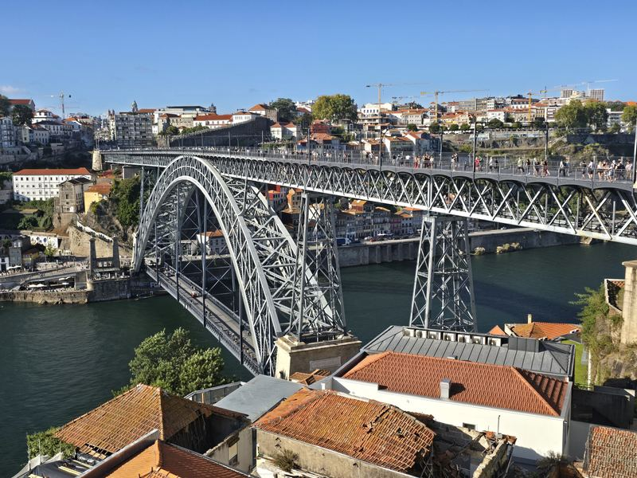
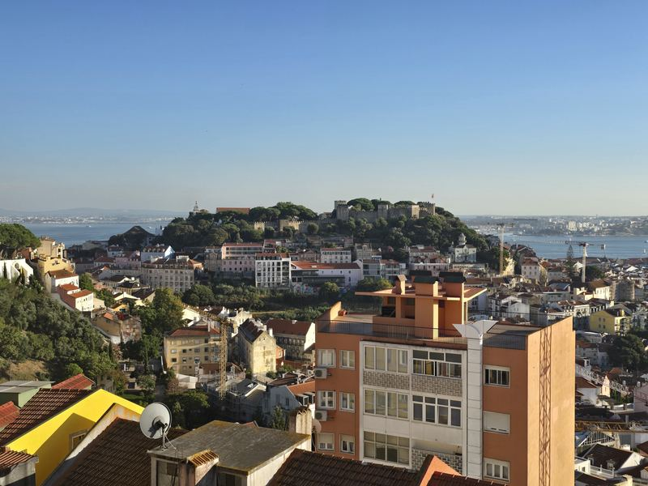
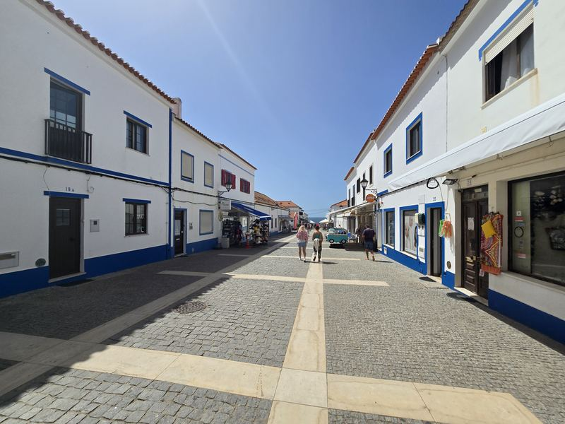
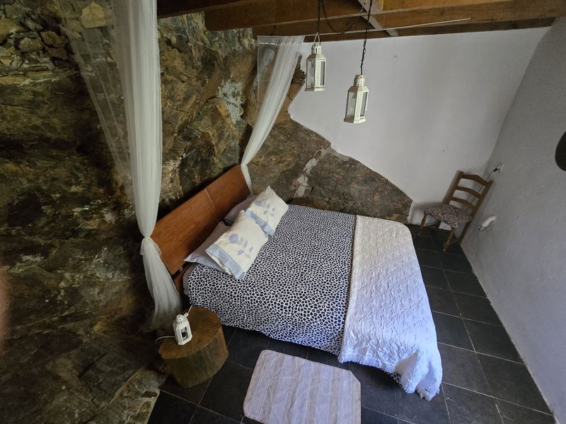
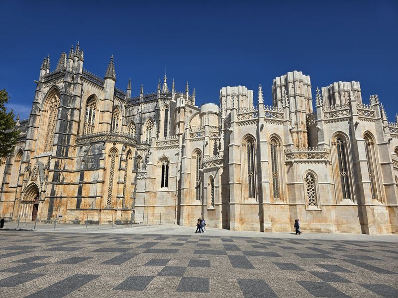
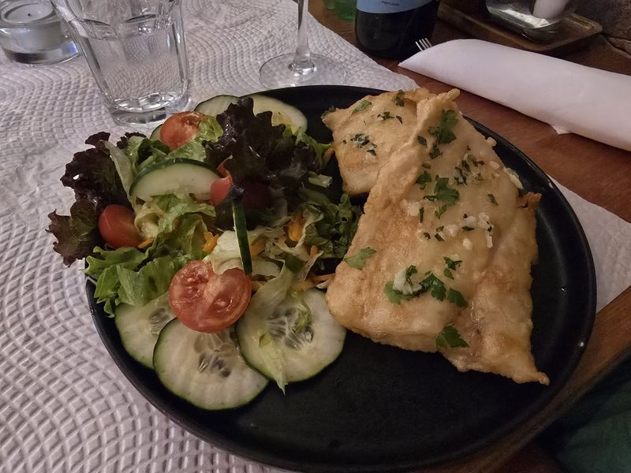
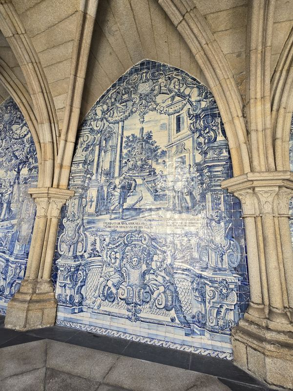

Porto i okolice
Nasz pobyt zaczęliśmy od Porto. To duże, drugie co do wielkości miasto Portugalii, położone jest na północy kraju, gdzie jest trochę chłodniej i…
Czytaj rozdziałRelacja z podróży
To był jeden z ostatnich krajów w Europie, w którym nie byliśmy na wakacjach. Od kilku lat więc planowaliśmy z naszymi sprawdzonymi przyjaciółmi Zuzą i Tomkiem – i wreszcie zrealizowaliśmy marzenie w 2026 roku. Pobyt podzieliliśmy na dwie części – w pierwszym tygodniu była z nami Milunia, potem wróciła do domu, a w kolejnych dwóch dołączyli właśnie oni.

Nasz pobyt zaczęliśmy od Porto. To duże, drugie co do wielkości miasto Portugalii, położone jest na północy kraju, gdzie jest trochę chłodniej i…
Czytaj rozdział
Drugim miejscem naszego pobytu była Lizbona, którą poznawaliśmy w myśl zasady the best of. Największym wydarzeniem pierwszego wieczoru – rocznicy…
Czytaj rozdział
Kolejnych kilka dni spędzaliśmy w Lagos, na południowym wybrzeżu. Ale zanim tam dotarliśmy czekały nas dwie przepiękne atrakcje poniżej Lizbony.…
Czytaj rozdział
Kolejny nocleg mieliśmy w Casa do Rio, domu odnalezionym przez Anię. To niewielki dom rekreacyjny znajdujący się w zakolu rzeki, usadowiony przy…
Czytaj rozdział
Ostatnia część naszej wycieczki wiodła znowu z północy na południe, w kierunku Lizbony. Pierwszym przystankiem była Batalha, kolejny zespół…
Czytaj rozdział
Portugalia znana jest z kuchni przede wszystkim morskiej, a jej królem pozostaje dorsz, czyli bacalhau. Przyrządzany i podawany na sto sposobów, w…
Czytaj rozdział
Współczesna Portugalia poziomem rozwoju i zamożności nie odbiega zasadniczo od Polski. Taniej jest w kawiarniach – zestaw pastel de nata z kawą…
Czytaj rozdział